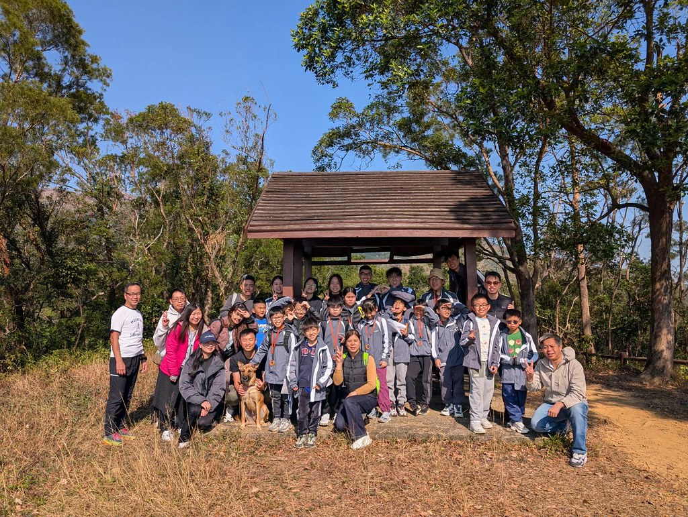
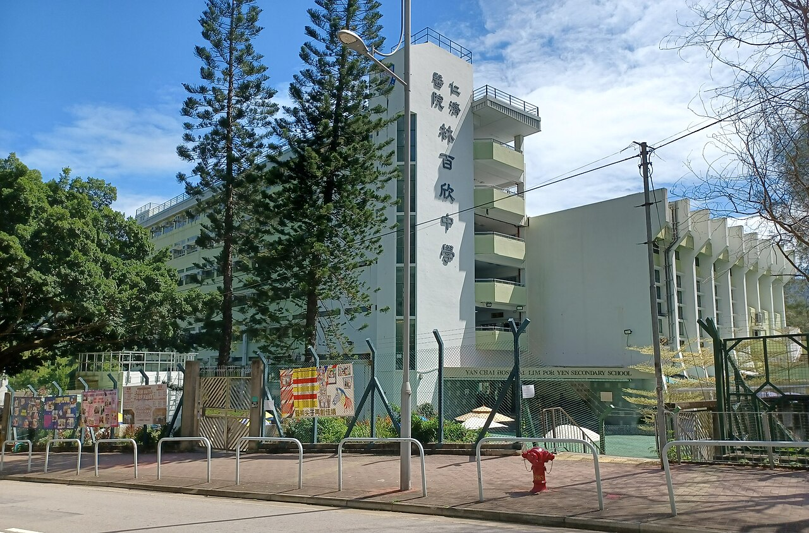
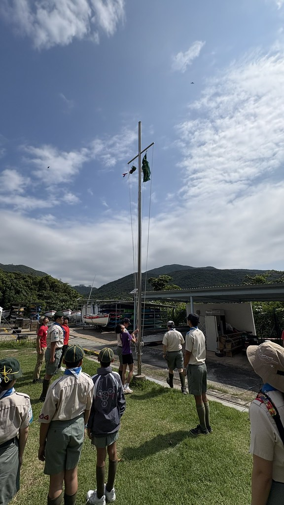
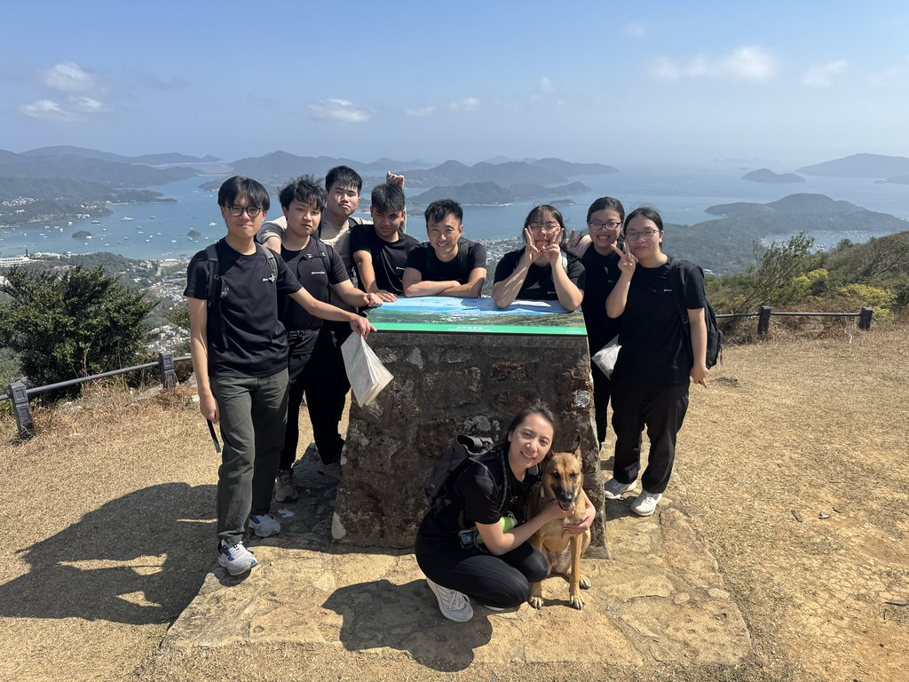
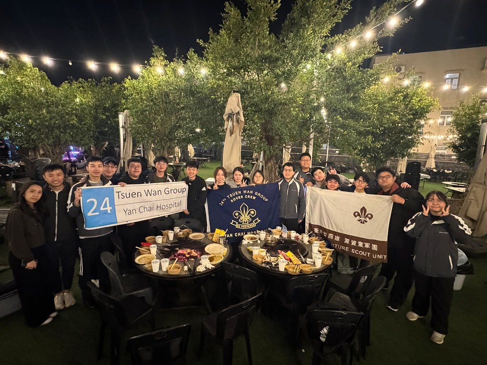
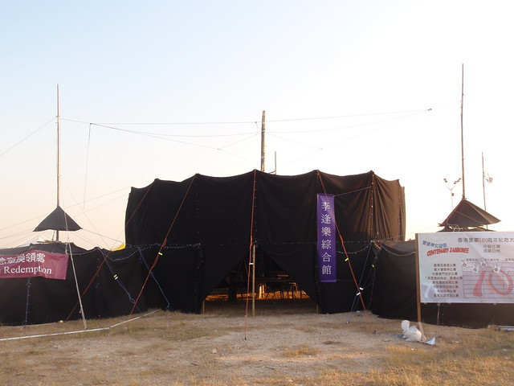
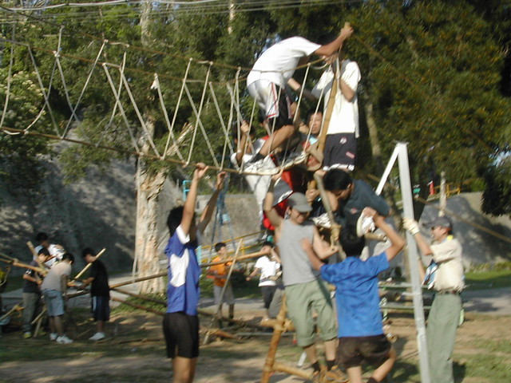
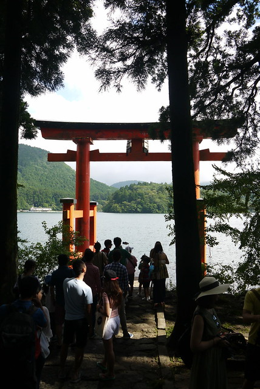

幼童軍多元活動・探索求知。6–11 歲，星期六 15:00–17:00。

想加入先對年齡，再填申請表。集會在林百欣中學，由荃威花園或荃灣中心步行約五分鐘。
考慮入會、陪子女，或者你已宣誓——揀下面一項，入「有用文件」對應章節。

幼童軍多元活動・探索求知。6–11 歲，星期六 15:00–17:00。

童軍擁抱挑戰・建立團隊。11–15 歲，星期六 14:00–17:00。

深資童軍自務自治・明日領袖。15–20 歲，星期六 14:00–17:00。

樂行童軍服務為本・國際視野。18–25 歲，每月一次。
近年成績放在主頁。1999 年起的完整紀錄在全部比賽成績，方便查閱和轉發。
這裡先看三張。全部海報一頁看完節日、比賽和活動海報。



旅團於 1984 年成立。2025 年 12 月 27 日舉行四十周年旅慶晚宴。歷史回顧